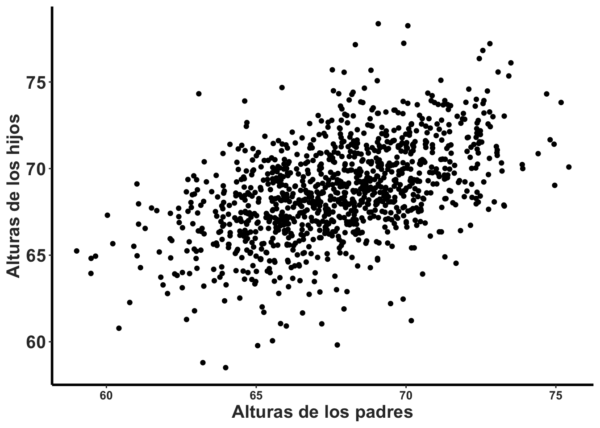
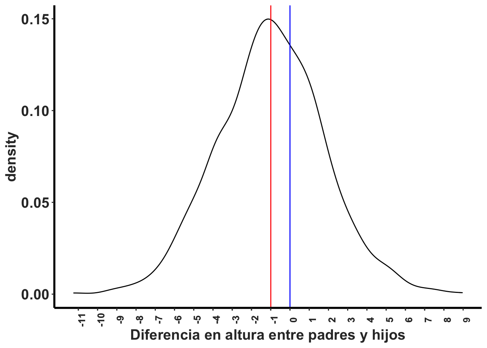

T9a_Pruebas_t-Pareados
Fecha de la ultima revisión
## [1] "2020-08-05"Prueba de t-pareado
Si tienes datos que no son independiente, es necesario usar la prueba con datos pareados (paired t-test). Cuando se refiere a datos no independiente es que hay evidencia que los datos pueden estar relacionado de una forma. En el siguiente ejemplo tenemos la altura de los padres y el altura de el hijo. Hay evidencia que genética influencia la altura de los humanos, también hay el ambiente. Si el ambiente (nutrición, etc) es la única variable que tiene influencia sobre la altura pudiese que no encontramos una relación entre la altura del padre y el hijo.
Los datos provienen del paquete UsingR y el archivo se llama father.son
Paired Two-Sample T-test
require(Hmisc)
require(UsingR)
head(father.son)## fheight sheight
## 1 65.04851 59.77827
## 2 63.25094 63.21404
## 3 64.95532 63.34242
## 4 65.75250 62.79238
## 5 61.13723 64.28113
## 6 63.02254 64.24221Visualizar la diferencias
Antes de hacer la prueba es recomendado hacer un gráfico de puntos para visualizar los datos y observar si hay un patrón. Vemos a medida que aumenta la altura de los padres los hijos tienden a estar más altos.
ggplot(father.son, aes(fheight, sheight))+
geom_point()+
rlt_theme ***
La prueba de t-con datos pareados es la misma que la prueba de t con un grupo, t.test().
Las opciones para esta prueba son las siguientes en roja
- t.test(x, y,
- alternative = c(two.sided, less, greater),
- mu =, paired = FALSE, var.equal = FALSE,
- conf.level = 0.95, …).
El resultado: El valor de t-observado es de 11.789, con un grado de libertad de 1077 (n=1078), y valor de p <0.0001. Por consecuencia se rechaza la hipótesis nula y se acepta la alterna. El intervalo de confianza del promedio es -1.163 a -0.831, con un promedio de -0.99. Esto significa que los padres tiende a estar una pulgada (-0.99) más bajo que los hijos.
t.test(father.son$fheight, father.son$sheight, paired=TRUE)##
## Paired t-test
##
## data: father.son$fheight and father.son$sheight
## t = -11.789, df = 1077, p-value < 2.2e-16
## alternative hypothesis: true difference in means is not equal to 0
## 95 percent confidence interval:
## -1.1629160 -0.8310296
## sample estimates:
## mean of the differences
## -0.9969728Visualizar la diferencias
Podemos visualizar la diferencia entre los hijos y los padres, vemos el promedio si no tuviese diferencis (la linea azul), y el estimado (el promedio de la diferencias es rojo, con el intervalo de confianza en las lineas entrecortada).
heightDiff<-father.son$fheight-father.son$sheight # para calcular la diferencia entre el padre y el hijo.
ggplot(father.son, aes(x=fheight-sheight))+
geom_density()+
geom_vline(xintercept = mean(heightDiff), colour="red")+
geom_vline(xintercept = mean(heightDiff)+ 2*c(-1,1)*sd(heightDiff)/sqrt(nrow(father.son)), linetype=2)+
geom_vline(xintercept = 0, colour="blue")+
rlt_theme+
xlab("Diferencia en altura entre padres y hijos") ***
Paired t-test, Números de niños abuela y madre
Ver si la cantidad de hijos cambia entre su abuela y su madre
abuela=c(3,11,3,9,3,3,3,
4,3,7,6,7,6,3,2,4)
madre=c(2,3,3,3,1,2,2,
2,2,2,2,1,3,2,2,2)
df=data.frame(abuela,madre)
df## abuela madre
## 1 3 2
## 2 11 3
## 3 3 3
## 4 9 3
## 5 3 1
## 6 3 2
## 7 3 2
## 8 4 2
## 9 3 2
## 10 7 2
## 11 6 2
## 12 7 1
## 13 6 3
## 14 3 2
## 15 2 2
## 16 4 2df$diff=df$abuela-df$madre
df## abuela madre diff
## 1 3 2 1
## 2 11 3 8
## 3 3 3 0
## 4 9 3 6
## 5 3 1 2
## 6 3 2 1
## 7 3 2 1
## 8 4 2 2
## 9 3 2 1
## 10 7 2 5
## 11 6 2 4
## 12 7 1 6
## 13 6 3 3
## 14 3 2 1
## 15 2 2 0
## 16 4 2 2mean(df$diff)## [1] 2.6875t.test(df$abuela,df$madre, paired=TRUE)##
## Paired t-test
##
## data: df$abuela and df$madre
## t = 4.4525, df = 15, p-value = 0.0004654
## alternative hypothesis: true difference in means is not equal to 0
## 95 percent confidence interval:
## 1.400975 3.974025
## sample estimates:
## mean of the differences
## 2.6875Cultivador de Toronjas con parcelas pareadas
Un cultivador heredo parcelas donde hay árboles de toronjas. El quiere saber si al añadir abono, la cosecha de toronjas aumenta. El efecto del abono sobre la producción de toronjas en parcelas pareadas en Puerto Rico.
La cantidad de Toronjas producidas por árbol en fincas pareadas, cada finca tiene una parcela con abono y la otra la otra parcela sin abono. Tenemos 18 diferentes sitios en PR donde se probo el efecto del abono sobre la producción de toronjas, se enseña solamente lo primero 8 pares de valores en la tabla.
library(tibble)
Toronja=tribble(
~Fertilizante, ~Sin_Fertilizante, ~Municipio,
"2250" , "1920" , "Utuado",
"2410", "2020", "Cabo Rojo",
"2260", "2060", "Manati",
"2200", "1960", "Yabucoa",
"2360", "1960", "Humacao",
"2320", "2140","Caguas",
"2240", "1980", "San Juan",
"2300", "1940", "Jayuya",
"2090", "1790","Ponce"
)
library(huxtable)
huxtable(Toronja)%>%
theme_article(header_col = FALSE)%>%
set_bottom_border(row = 1, col = everywhere, value = 1) %>%
set_caption("La cantidad de toronjas producidas en parceles en diferentes municipios")%>%
add_footnote("Cada parcela es del mismo tamaño con la misma cantidad de arboles")| Fertilizante | Sin_Fertilizante | Municipio |
|---|---|---|
| 2250 | 1920 | Utuado |
| 2410 | 2020 | Cabo Rojo |
| 2260 | 2060 | Manati |
| 2200 | 1960 | Yabucoa |
| 2360 | 1960 | Humacao |
| 2320 | 2140 | Caguas |
| 2240 | 1980 | San Juan |
| 2300 | 1940 | Jayuya |
| 2090 | 1790 | Ponce |
| Cada parcela es del mismo tamaño con la misma cantidad de arboles | ||
2. Se calcula la diferencias de producción de toronjas por parcela 3. Cual es el promedio de las diferencias 4. La prueba de t con datos pareado.
El resultado: El valor de t-observado es de 8.80, con un grado de libertad de 17 (n=18), y valor de p <0.0001. Por consecuencia se rechaza la hipótesis nula y se acepta la alterna. El intervalo de confianza del promedio es 198.5 - 323.7, con un promedio de 261. Esto significa que a añadir fertilizante la producción de toronjas aumento de en promedio de 261 toronjas.
Fert=c(2250,2410, 2260,2200, 2360,
2320,2240,2300,2090, 2250,2410, 2260,2200, 2360,
2320,2240,2300,2090)
#Fert
SFert=c(1920,2020,2060,1960,
1960,2140,1980,1940,2100, 1920,2020,2060,1960,
1960,2140,1980,1940,2100)
#SFert
df=data.frame(Fert,SFert)
df$diff_produccion=df$Fert-df$SFert
mean(df$diff_produccion) # el promedio de las diferencias## [1] 261.1111t.test(df$Fert,df$SFert, paired=TRUE)##
## Paired t-test
##
## data: df$Fert and df$SFert
## t = 8.8005, df = 17, p-value = 9.732e-08
## alternative hypothesis: true difference in means is not equal to 0
## 95 percent confidence interval:
## 198.5125 323.7097
## sample estimates:
## mean of the differences
## 261.1111El número de Hojas por planta en diferentes momentos (tiempo)
Los datos representa cuantas hojas tenian las plantas en diferentes momentos de su muestreo. Por consecuencia los datos nos son independiente.
library(readr)
Lepanthes_eltoroensis_Georges_STUDENT <- read_csv("Data_files_csv/Lepanthes_eltoroensis_Georges_STUDENT.csv")
Lep=Lepanthes_eltoroensis_Georges_STUDENT
head(Lep)| T1 | T2 | T3 | T5 | T6 | T7 | T8 | T9 | T10 | T11 | T12 | T13 |
|---|---|---|---|---|---|---|---|---|---|---|---|
| 2 | 2 | 2 | 2 | 5 | |||||||
| 4 | 4 | 4 | 4 | 4 | 4 | 4 | 3 | 3 | 3 | 3 | |
| 4 | 4 | 4 | 4 | 3 | 3 | 3 | 3 | 3 | 3 | 3 | 2 |
| 3 | 4 | 3 | 4 | 4 | 4 | 4 | 4 | 3 | 4 | 4 | 2 |
| 2 | 3 | 3 | 3 | 3 | 3 | 3 | 3 | 3 | 4 | 3 | 2 |
| 4 | 3 | 3 | 4 | 3 | 5 |
length(Lep$T1)## [1] 1084head(Lep)| T1 | T2 | T3 | T5 | T6 | T7 | T8 | T9 | T10 | T11 | T12 | T13 |
|---|---|---|---|---|---|---|---|---|---|---|---|
| 2 | 2 | 2 | 2 | 5 | |||||||
| 4 | 4 | 4 | 4 | 4 | 4 | 4 | 3 | 3 | 3 | 3 | |
| 4 | 4 | 4 | 4 | 3 | 3 | 3 | 3 | 3 | 3 | 3 | 2 |
| 3 | 4 | 3 | 4 | 4 | 4 | 4 | 4 | 3 | 4 | 4 | 2 |
| 2 | 3 | 3 | 3 | 3 | 3 | 3 | 3 | 3 | 4 | 3 | 2 |
| 4 | 3 | 3 | 4 | 3 | 5 |
length(Lep$T11)## [1] 1084tail(Lep)| T1 | T2 | T3 | T5 | T6 | T7 | T8 | T9 | T10 | T11 | T12 | T13 |
|---|---|---|---|---|---|---|---|---|---|---|---|
| 3 | 4 | 5 | |||||||||
| 2 | 4 | 3 | 5 | ||||||||
| 4 | 4 | 4 | 3 | 3 | 4 | 5 | |||||
| 2 | 5 | ||||||||||
| 1 | 2 | 2 | 2 | 2 | 2 | 2 | 2 | 5 | |||
| 1 | 1 | 1 | 2 | 2 | 5 |
model2=t.test(Lep$T3,Lep$T1, paired =TRUE)
model2##
## Paired t-test
##
## data: Lep$T3 and Lep$T1
## t = -2.0897, df = 380, p-value = 0.03731
## alternative hypothesis: true difference in means is not equal to 0
## 95 percent confidence interval:
## -0.178298843 -0.005428191
## sample estimates:
## mean of the differences
## -0.09186352Cual son los supuestos de la prueba de t con datos pareados
El supuesto es que la diferencia entre los valores de los dos grupos tiene una distribución normal.
Hay solamente un supuesto que evaluar
Lep$diff13_3=Lep$T13-Lep$T3
head(Lep)| T1 | T2 | T3 | T5 | T6 | T7 | T8 | T9 | T10 | T11 | T12 | T13 | diff13_3 |
|---|---|---|---|---|---|---|---|---|---|---|---|---|
| 2 | 2 | 2 | 2 | 5 | ||||||||
| 4 | 4 | 4 | 4 | 4 | 4 | 4 | 3 | 3 | 3 | 3 | ||
| 4 | 4 | 4 | 4 | 3 | 3 | 3 | 3 | 3 | 3 | 3 | 2 | -2 |
| 3 | 4 | 3 | 4 | 4 | 4 | 4 | 4 | 3 | 4 | 4 | 2 | -1 |
| 2 | 3 | 3 | 3 | 3 | 3 | 3 | 3 | 3 | 4 | 3 | 2 | -1 |
| 4 | 3 | 3 | 4 | 3 | 5 |
library(ggplot2)
ggplot(Lep,aes(diff13_3))+
geom_histogram()